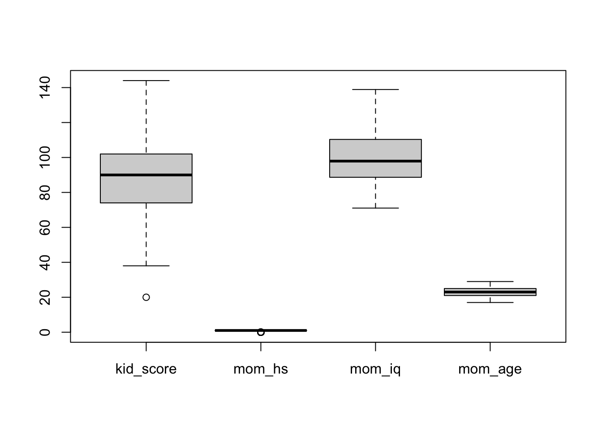

A principal ferramenta para computação Bayesiana é a linguagem probabilística Stan. O nome homenageia Stanislaw Ulam: um matemático polonês membro do projeto Manhattan (bomba atômica americana) e um dos principais criadores do método de Monte Carlo de simulação. Stan foi lançado em 2012 e é a principal ferramenta utilizada hoje para inferência estatística Bayesiana. O programa roda em linguagem C++, mas possui interfaces para R, Python, MATLAB, Julia, Stata, Mathematica, Scala e Shell.
O problema do Stan é que ele é uma linguagem de programação e, portanto, possui um acesso dificultado a não-programadores. Abaixo um código que mostra como é um programa escrito em Stan:
data {
int<lower=0> N;
vector<lower=0, upper=200>[N] kid_score;
vector<lower=0, upper=200>[N] mom_iq;
}
parameters {
vector[2] beta;
real<lower=0> sigma;
}
model {
sigma ~ cauchy(0, 2.5);
kid_score ~ normal(beta[1] + beta[2] * mom_iq, sigma);
}rstanarmPara remediar isso, temos interfaces abstratas que interpretam a intenção do usuário e lidam com a parte mais obral de codificação. A principal delas é o pacote rstanarm, que a etmologia pode ser quebrada em:
r: pacote para Rstan: usa a linguagem probabilística Stanarm: acrônimo para Applied Regression ModelingO código anterior de Stan ficaria assim no rstanarm:
stan_glm(kid_score ~ mom_iq, data = dataset)A ideia aqui é modelar uma variável dependente sendo a combinação linear de variáveis independentes.
\[y = \alpha + \boldsymbol{\beta} \textbf{X} + \epsilon\]
Aonde \(y\) é a variável dependente, \(\alpha\) um constante, \(\boldsymbol{\beta}\) um vetor de coeficientes, \(\textbf{X}\) uma matriz de dados e \(\epsilon\) o erro do modelo.
Vamos aplicar modelagem estatística Bayesiana em um dataset famoso chamado kidiq. São dados de uma survey de mulheres adultas norte-americanas e seus respectivos filhos. Datado de 2007 possui 434 observações e 4 variáveis:
kid_score: QI da criança;mom_hs: binária (0 ou 1) se a mãe possui diploma de ensino médio;mom_iq: QI da mãe; emom_age: idade da mãe.Vamos usar 4 modelos para modelar QI da criança (kid_score). Os primeiros dois modelos terão apenas um único preditor (mom_hs ou mom_iq), o terceiro usará dois preditores (mom_hs + mom_iq) e o quarto incluirá uma interação entre esses dois preditores (mom_hs * mom_iq),
Antes de tudo, analise SEMPRE os dados em mãos. Graficamente e com tabelas.
# Detectar quantos cores/processadores
options(mc.cores = parallel::detectCores())
options(Ncpus = parallel::detectCores())
library(rstanarm)## Loading required package: Rcpp## This is rstanarm version 2.21.1## - See https://mc-stan.org/rstanarm/articles/priors for changes to default priors!## - Default priors may change, so it's safest to specify priors, even if equivalent to the defaults.## - For execution on a local, multicore CPU with excess RAM we recommend calling## options(mc.cores = parallel::detectCores())data(kidiq)
boxplot(kidiq)
Pessoalmente uso o pacote skimr com a função skim():
library(skimr)
skim(kidiq)| Name | kidiq |
| Number of rows | 434 |
| Number of columns | 4 |
| _______________________ | |
| Column type frequency: | |
| numeric | 4 |
| ________________________ | |
| Group variables | None |
Variable type: numeric
| skim_variable | n_missing | complete_rate | mean | sd | p0 | p25 | p50 | p75 | p100 | hist |
|---|---|---|---|---|---|---|---|---|---|---|
| kid_score | 0 | 1 | 86.80 | 20.41 | 20 | 74 | 90 | 102 | 144 | ▁▃▇▇▁ |
| mom_hs | 0 | 1 | 0.79 | 0.41 | 0 | 1 | 1 | 1 | 1 | ▂▁▁▁▇ |
| mom_iq | 0 | 1 | 100.00 | 15.00 | 71 | 89 | 98 | 110 | 139 | ▃▇▆▃▂ |
| mom_age | 0 | 1 | 22.79 | 2.70 | 17 | 21 | 23 | 25 | 29 | ▂▅▇▃▂ |
mom_hsPrimeiro modelo é apenas a variável mom_hs como preditora:
model_1 <- stan_glm(
kid_score ~ mom_hs,
data = kidiq
)Para ver os valores estimados pelo modelo usamos a função print:
print(model_1)## stan_glm
## family: gaussian [identity]
## formula: kid_score ~ mom_hs
## observations: 434
## predictors: 2
## ------
## Median MAD_SD
## (Intercept) 77.5 2.1
## mom_hs 11.8 2.4
##
## Auxiliary parameter(s):
## Median MAD_SD
## sigma 19.9 0.7
##
## ------
## * For help interpreting the printed output see ?print.stanreg
## * For info on the priors used see ?prior_summary.stanregAlém disso, temos a função summary que traz tudo que queremos:
summary(model_1)##
## Model Info:
## function: stan_glm
## family: gaussian [identity]
## formula: kid_score ~ mom_hs
## algorithm: sampling
## sample: 4000 (posterior sample size)
## priors: see help('prior_summary')
## observations: 434
## predictors: 2
##
## Estimates:
## mean sd 10% 50% 90%
## (Intercept) 77.6 2.1 74.9 77.5 80.2
## mom_hs 11.8 2.3 8.8 11.8 14.9
## sigma 19.9 0.7 19.0 19.9 20.8
##
## Fit Diagnostics:
## mean sd 10% 50% 90%
## mean_PPD 86.8 1.4 85.0 86.8 88.5
##
## The mean_ppd is the sample average posterior predictive distribution of the outcome variable (for details see help('summary.stanreg')).
##
## MCMC diagnostics
## mcse Rhat n_eff
## (Intercept) 0.0 1.0 3543
## mom_hs 0.0 1.0 3616
## sigma 0.0 1.0 3686
## mean_PPD 0.0 1.0 3979
## log-posterior 0.0 1.0 1866
##
## For each parameter, mcse is Monte Carlo standard error, n_eff is a crude measure of effective sample size, and Rhat is the potential scale reduction factor on split chains (at convergence Rhat=1).mom_iqSegundo modelo é apenas a variável mom_iq como preditora:
model_2 <- stan_glm(
kid_score ~ mom_iq,
data = kidiq
)Podemos também especificar os percentis desejados no sumário:
summary(model_2, probs = c(0.025, 0.975))##
## Model Info:
## function: stan_glm
## family: gaussian [identity]
## formula: kid_score ~ mom_iq
## algorithm: sampling
## sample: 4000 (posterior sample size)
## priors: see help('prior_summary')
## observations: 434
## predictors: 2
##
## Estimates:
## mean sd 2.5% 98%
## (Intercept) 25.8 6.1 13.8 37.5
## mom_iq 0.6 0.1 0.5 0.7
## sigma 18.3 0.6 17.1 19.5
##
## Fit Diagnostics:
## mean sd 2.5% 98%
## mean_PPD 86.8 1.3 84.4 89.4
##
## The mean_ppd is the sample average posterior predictive distribution of the outcome variable (for details see help('summary.stanreg')).
##
## MCMC diagnostics
## mcse Rhat n_eff
## (Intercept) 0.1 1.0 4338
## mom_iq 0.0 1.0 4346
## sigma 0.0 1.0 4417
## mean_PPD 0.0 1.0 4152
## log-posterior 0.0 1.0 1815
##
## For each parameter, mcse is Monte Carlo standard error, n_eff is a crude measure of effective sample size, and Rhat is the potential scale reduction factor on split chains (at convergence Rhat=1).mom_hs + mom_iqTerceiro modelo usa as duas variáveis mom_hs e mom_iq como preditoras:
model_3 <- stan_glm(
kid_score ~ mom_hs + mom_iq,
data = kidiq
)print(model_3)## stan_glm
## family: gaussian [identity]
## formula: kid_score ~ mom_hs + mom_iq
## observations: 434
## predictors: 3
## ------
## Median MAD_SD
## (Intercept) 25.8 6.1
## mom_hs 6.0 2.2
## mom_iq 0.6 0.1
##
## Auxiliary parameter(s):
## Median MAD_SD
## sigma 18.2 0.6
##
## ------
## * For help interpreting the printed output see ?print.stanreg
## * For info on the priors used see ?prior_summary.stanregmom_hs * mom_iqQuarto modelo usa as duas variáveis mom_hs e mom_iq como preditoras por meio de uma interação entre as duas:
model_4 <- stan_glm(
kid_score ~ mom_hs * mom_iq,
data = kidiq
)print(model_4)## stan_glm
## family: gaussian [identity]
## formula: kid_score ~ mom_hs * mom_iq
## observations: 434
## predictors: 4
## ------
## Median MAD_SD
## (Intercept) -10.2 13.6
## mom_hs 49.5 14.7
## mom_iq 1.0 0.1
## mom_hs:mom_iq -0.5 0.2
##
## Auxiliary parameter(s):
## Median MAD_SD
## sigma 18.0 0.6
##
## ------
## * For help interpreting the printed output see ?print.stanreg
## * For info on the priors used see ?prior_summary.stanregPara as variáveis qualitativas, o R usa um tipo especial de variável chamado factor. A codificação é em números inteiros \(1,2,\dots,K\) mas a relação é distinta/nominal. Ou seja 1 é distinto de 2 e não 1 é 2x menor que 2. Não há relação quantitativa entre os valores das variáveis factor.
Isso resolve o problema de termos variáveis qualitativas (também chamadas de dummy) em modelos de regressão. Para um factor com \(K\) quantidade de classes distintas, temos a possibilidade de criar \(K-1\) coeficientes de regressão. Um para cada classe e usando uma como basal (baseline).
library(gapminder)
levels(gapminder$continent)## [1] "Africa" "Americas" "Asia" "Europe" "Oceania"model_5 <- stan_glm(lifeExp ~ gdpPercap + factor(continent), data = gapminder)print(model_5)## stan_glm
## family: gaussian [identity]
## formula: lifeExp ~ gdpPercap + factor(continent)
## observations: 1704
## predictors: 6
## ------
## Median MAD_SD
## (Intercept) 47.9 0.4
## gdpPercap 0.0 0.0
## factor(continent)Americas 13.6 0.6
## factor(continent)Asia 8.7 0.6
## factor(continent)Europe 17.6 0.6
## factor(continent)Oceania 18.1 1.8
##
## Auxiliary parameter(s):
## Median MAD_SD
## sigma 8.4 0.1
##
## ------
## * For help interpreting the printed output see ?print.stanreg
## * For info on the priors used see ?prior_summary.stanregObs: para mudar o basal de referência de um factor use a função relevel() do R.
Dois datasets estão disponíveis na pasta datasets/:
datasets/WHO_Life_Exp.csvdatasets/Wine_Quality.csvEsse dataset possui 193 países nos últimos 15 anos.
countryyearstatuslife_expectancyadult_mortalityinfant_deathsalcoholpercentage_expenditurehepatitis_bmeaslesbmiunder_five_deathspoliototal_expenditurediphtheriahiv_aidsgdppopulationthinness_1_19_yearsthinness_5_9_yearsincome_composition_of_resourcesschoolingEsse dataset possui 1599 vinhos e estão relacionados com variantes tintas do vinho “Vinho Verde” português. Para mais detalhes, consulte a referência [Cortez et al., 2009]. Devido a questões de privacidade e logística, apenas variáveis físico-químicas (entradas) e sensoriais (a saída) estão disponíveis (por exemplo, não há dados sobre os tipos de uva, marca de vinho, preço de venda do vinho, etc.).
fixed_acidityvolatile_aciditycitric_acidresidual_sugarchloridesfree_sulfur_dioxidetotal_sulfur_dioxidedensityp_hsulphatesalcoholquality###P. Cortez, A. Cerdeira, F. Almeida, T. Matos and J. Reis. Modeling wine preferences by data mining from physicochemical properties. In Decision Support Systems, Elsevier, 47(4):547-553, 2009.
sessionInfo()## R version 4.0.3 (2020-10-10)
## Platform: x86_64-apple-darwin17.0 (64-bit)
## Running under: macOS Big Sur 10.16
##
## Matrix products: default
## LAPACK: /Library/Frameworks/R.framework/Versions/4.0/Resources/lib/libRlapack.dylib
##
## locale:
## [1] en_US.UTF-8/en_US.UTF-8/en_US.UTF-8/C/en_US.UTF-8/en_US.UTF-8
##
## attached base packages:
## [1] stats graphics grDevices utils datasets methods base
##
## other attached packages:
## [1] gapminder_0.3.0 skimr_2.1.2 rstanarm_2.21.1 Rcpp_1.0.5 readxl_1.3.1
##
## loaded via a namespace (and not attached):
## [1] nlme_3.1-150 matrixStats_0.57.0 xts_0.12.1 threejs_0.3.3 rstan_2.21.2 repr_1.1.0
## [7] tools_4.0.3 utf8_1.1.4 R6_2.5.0 DT_0.16 colorspace_2.0-0 withr_2.3.0
## [13] tidyselect_1.1.0 gridExtra_2.3 prettyunits_1.1.1 processx_3.4.5 curl_4.3 compiler_4.0.3
## [19] cli_2.2.0 shinyjs_2.0.0 colourpicker_1.1.0 scales_1.1.1 dygraphs_1.1.1.6 ggridges_0.5.2
## [25] callr_3.5.1 stringr_1.4.0 digest_0.6.27 StanHeaders_2.21.0-6 minqa_1.2.4 rmarkdown_2.5
## [31] base64enc_0.1-3 pkgconfig_2.0.3 htmltools_0.5.0 lme4_1.1-26 highr_0.8 fastmap_1.0.1
## [37] htmlwidgets_1.5.2 rlang_0.4.9 shiny_1.5.0 generics_0.1.0 zoo_1.8-8 jsonlite_1.7.1
## [43] crosstalk_1.1.0.1 gtools_3.8.2 dplyr_1.0.2 inline_0.3.17 magrittr_2.0.1 loo_2.3.1
## [49] bayesplot_1.7.2 Matrix_1.2-18 munsell_0.5.0 fansi_0.4.1 lifecycle_0.2.0 stringi_1.5.3
## [55] yaml_2.2.1 MASS_7.3-53 pkgbuild_1.1.0 plyr_1.8.6 grid_4.0.3 parallel_4.0.3
## [61] promises_1.1.1 crayon_1.3.4 miniUI_0.1.1.1 lattice_0.20-41 splines_4.0.3 knitr_1.30
## [67] ps_1.4.0 pillar_1.4.7 igraph_1.2.6 boot_1.3-25 markdown_1.1 shinystan_2.5.0
## [73] reshape2_1.4.4 codetools_0.2-18 stats4_4.0.3 rstantools_2.1.1 glue_1.4.2 evaluate_0.14
## [79] V8_3.4.0 RcppParallel_5.0.2 nloptr_1.2.2.2 vctrs_0.3.5 httpuv_1.5.4 cellranger_1.1.0
## [85] tidyr_1.1.2 gtable_0.3.0 purrr_0.3.4 assertthat_0.2.1 ggplot2_3.3.2 xfun_0.19
## [91] mime_0.9 xtable_1.8-4 later_1.1.0.1 survival_3.2-7 rsconnect_0.8.16 tibble_3.0.4
## [97] shinythemes_1.1.2 statmod_1.4.35 ellipsis_0.3.1